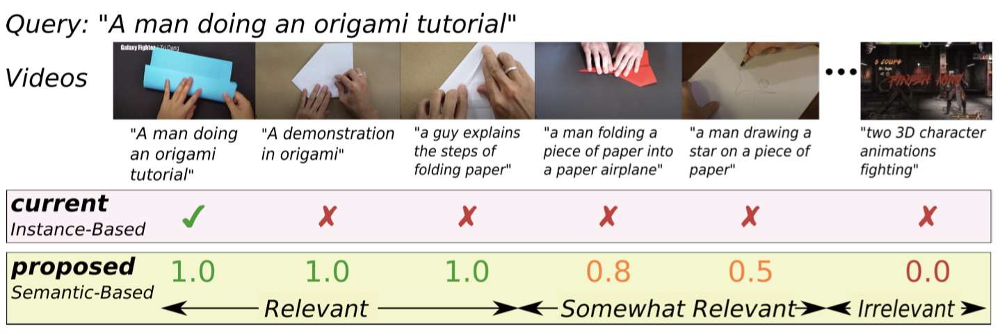
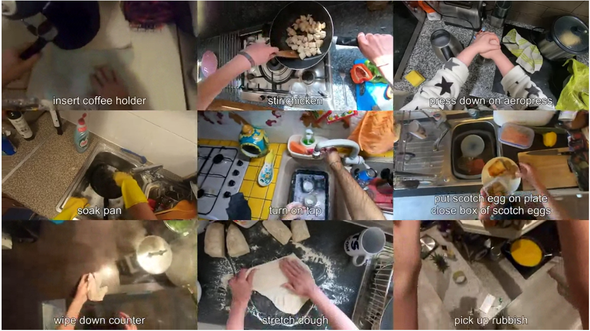
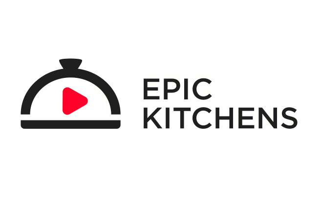
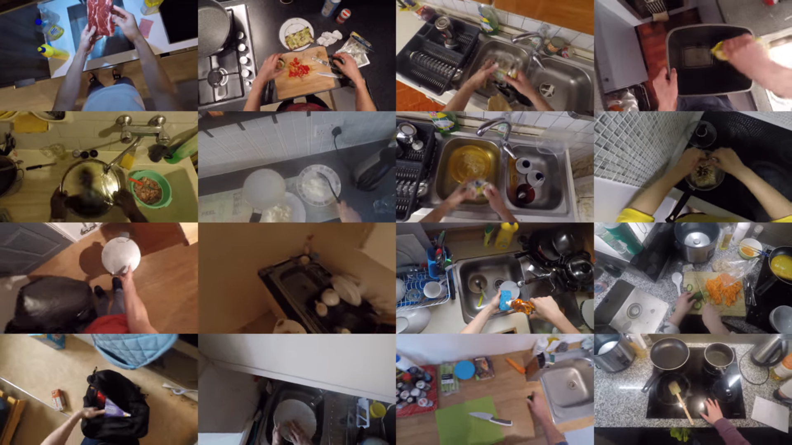
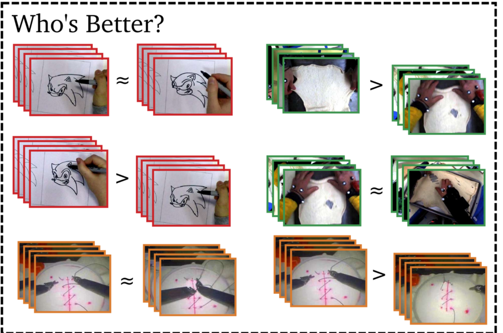

I am a Postdoctoral researcher at the University of Amsterdam, working with with Prof. Cees Snoek. I completed my PhD at the University of Bristol, advised by Dr. Dima Damen and Prof. Walterio Mayol-Cuevas. My area of interest is Video Understanding, with my PhD thesis (which you can find here) focussing on Skill Determination.
Contact: hazel.doughty *at* uva.nl
News & Activities
- August 2021: Our paper Skeleton-Contrastive 3D Action Representation Learning was accepted at ACM Multimedia 2021
- July 2021: I'm co-organizing the NeurIPS'21 Workshop on Pre-registration in ML
- May 2021: Happy to be an outstanding reviewer for CVPR 2021
- April 2021: I'm co-organizing the Workshop on Structured Representations for Video Understanding at ICCV.
- March 2021: Our paper On Semantic Similarity in Video Retrieval got accepted at CVPR 2021.
- February 2021: I gave a talk at the University of Toronto's AI in Robotics Seminar Series.
- October 2020: Successfully defended my PhD thesis "Skill Determination from Long Videos". Thank you to my examiners Josef Sivic and Bill Freeman.
- August 2020: Proud to be an Outstanding Reviewer for ECCV 2020
- July 2020: EPIC-Kitchens-100 released. This is an extension of the original EPIC-Kitchens, now up 100 hours of video and 90,000 action segments.
- June 2020: I presented our CVPR paper Action Modifers: Learning from Adverbs in Instructional Videos at the Video Pentathlon workshop.
- April 2020: The journal paper EPIC-KITCHENS Dataset: Collection Challenges and Baselines has been accepted to IEEE Transactions on Pattern Analysis and Machine Intelligence
- Feb 2020: Action Modifers: Learning from Adverbs in Instructional Videos is accepted in CVPR 2020.
- Jan 2020: I'm co-organizing the Women in Computer Vision and Egocentric Perception, Interaction and Computing workshops at CVPR 2020.
- Dec 2019: Our new paper on 'Action Modifiers' is available on arXiv
- June 2019: We're presenting our paper on rank-aware temporal attention for skill determination at CVPR 2019.
Publications
 |
Skeleton-Contrastive 3D Action Representation Learning Fida Mohammad Thoker, Hazel Doughty, Cees Snoek ACM International Conference on Multimedia (MM'21) [arXiv] [Code] |
|  |
On Semantic Similarity in Video Retrieval Michael Wray, Hazel Doughty and Dima Damen IEEE Conference on Computer Vision and Pattern Recognition (CVPR), 2021. [Webpage] [arXiv] |
|  |
Rescaling Egocentric Vision: EPIC-KITCHENS-100 Dima Damen, Hazel Doughty, Giovanni Maria Farinella, Antonino Furnari, Evangelos Kazakos, Jian Ma, Davide Moltisanti, Jonathan Munro, Toby Perrett, Will Price, Michael Wray ArXiv, 2020. [Webpage] [arXiv] [Dataset and Code] |
 |
Action Modifiers: Learning from Adverbs in Instructional Videos Hazel Doughty, Ivan Laptev, Walterio Mayol-Cuevas and Dima Damen IEEE Conference on Computer Vision and Pattern Recognition (CVPR), 2020. [Webpage] [arXiv] [Dataset and Code] |
|  |
The EPIC-KITCHENS Dataset: Collection, Challenges and Baselines Dima Damen, Hazel Doughty, Giovanni Maria Farinella, Sanja Fidler, Antonino Furnari, Evangelos Kazakos, Davide Moltisanti, Jonathan Munro, Toby Perrett, Will Price, Michael Wray IEEE Transactions on Pattern Analysis and Machine Intelligence (TPAMI), 2020. [arXiv Preprint] |
 |
The Pros and Cons: Rank-Aware Temporal Attention for Skill Determination in Long Videos Hazel Doughty, Walterio Mayol-Cuevas and Dima Damen IEEE Conference on Computer Vision and Pattern Recognition (CVPR), 2019. [Webpage] [arXiv] [Dataset & Code] |
|  |
Scaling Egocentric Vision: The EPIC-Kitchens Dataset Dima Damen, Hazel Doughty, Giovanni Maria Farinella, Sanja Fidler, Antonino Furnari, Evangelos Kazakos, Davide Moltisanti, Jonathan Munro, Toby Perrett, Will Price, Michael Wray European Conference on Computer Vision (ECCV), 2018. (Oral) [arXiv] [Webpage & Dataset] |
|  |
Who's Better? Who's Best? Pairwise Deep Ranking for Skill Determination Hazel Doughty, Dima Damen and Walterio Mayol-Cuevas IEEE Conference on Computer Vision and Pattern Recognition (CVPR), 2018. (Spotlight) [arXiv] [Bibtex] [Dataset] |
Misc
Workshop Organizer: NeurIPS'21 Workshop on Pre-registration in ML, ICCV'21 Workshop on Structured Representations for Video Understanding, WiCV@CVPR2020, EPIC@CVPR2020, EPIC@ECCV2020
Reviewer: CVPR 2019-2022, ICCV 2019-2021, ECCV 2020, PAMI 2020, ACCV 2020, WACV 2020-2021, AAAI 2019
Outstading Reviewer: CVPR 2021, ECCV 2020, ACCV 2020